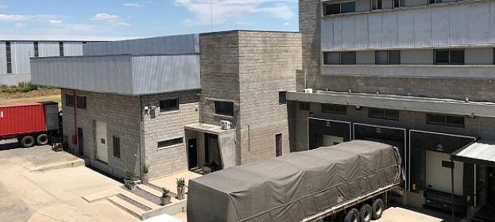
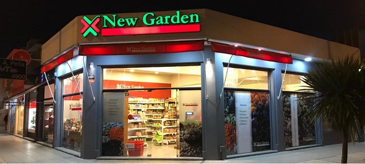

ASI SOMOS, ASI TRABAJAMOS
En 1934, Francisco E. Villares creó el primer establecimiento naturista de Sudamérica, ubicado en un local de la calle Talcahuano 155, en la ciudad de Buenos Aires.
Su interés por la comida natural provenía de motivos personales. Tenía la fuerte convicción que el naturismo y los alimentos integrales mejoraban la calidad de vida; sabía que le hacían bien a su organismo y que consumiendo algunos productos, podía incluso curarse o aliviar algunas enfermedades. Así, en pocos años el emprendimiento se transformó en un comercio prestigioso, donde los vecinos de la Capital Federal adquirían sus productos para las fiestas navideñas y fin de año.
En la década de los sesenta se incorporó a la empresa su hijo, Francisco A. Villares, coincidiendo su ingreso con una etapa de franca expansión y progreso, atendiendo las necesidades de comercios, restaurantes, supermercados e industrias de todo el país.
El crecimiento continuó su camino y en la década de los noventa se rerganizó la empresa en dos grandes divisiones:
VILLARES
En 2008 se inauguró la nueva planta de fraccionamiento y centro de distribución en Tortuguitas que permitió una expansión del negocio, ofreciéndole más variedad de productos y presentaciones a todos nuestros clientes.
También se tuvo la oportunidad de salir al mundo a buscar diferentes productos novedosos para poder traer al mercado argentino con licencia propia.
Hoy en día abastecemos más de 2000 clientes distribuidos a lo largo del territorio argentino, y también a países como Canadá, Paraguay, Uruguay, Bolivia y Brasil. Además tenemos nuestro negocio minorista: New Garden, con 24 locales y a la tienda online.
NEW GARDEN
Contamos con una cadena de 24 establecimientos ubicados estratégicamente en distintos barrios de la ciudad de Buenos Aires, Canning, Vicente López, Martínez, San Isidro, Pilar, Tigre, Pacheco y Mar del Plata, todos de la Provincia de Buenos Aires.
Contamos con una cadena de 24 establecimientos ubicados estratégicamente en distintos puntos de la Provincia de Buenos Aires.
Además contamos con una tienda online que entrega a todo el país. Te invitamos a conocernos y recibir el asesoramiento sobre alimentación sana y natural, ofrecido en nuestros locales, por intermedio de nuestras vendedoras y Nutricionistas.